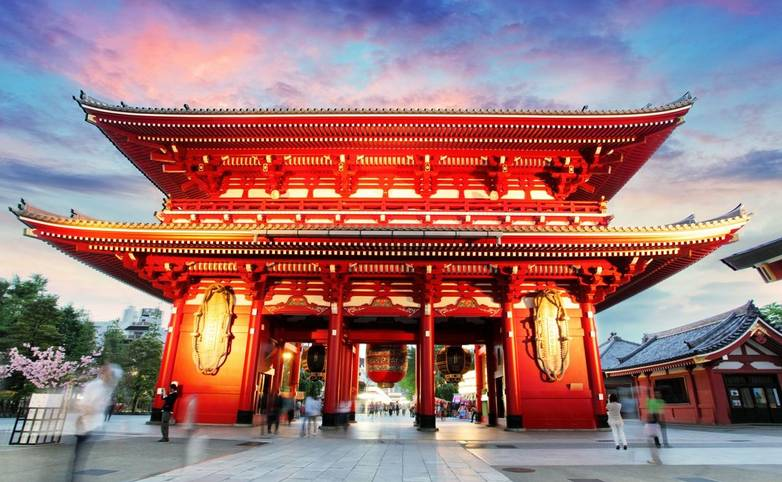

| Назва | Населення | Площа | Столиця |
|---|---|---|---|
| Японія | 126,8 мільйона | 377 929,99 км² | Токіо |
Токіо — столиця Японії, а також найбільше місто. Інші великі міста Осака, Наґоя й Саппоро. Токіо так само є найдорожчим містом для життя у світі. Японія складається приблизно із 6 800 островів. Чотири головні острови — Хонсю, Кюсю, Сікоку й Хоккайдо. У Японії розташовано понад 200 вулканів, а найвищим вулканом є гора Фудзі.
Багато пам'яток і цікавих місць ви знайдете в Кіото і його передмісті.Варто відвідати Токіо - один із найкрасивіших мегаполісів Азії. У цьому місті вікові традиції чудово поєднуються із сучасними технологіями, а величезні хмарочоси та бізнес-центри - із затишними японськими садами.
